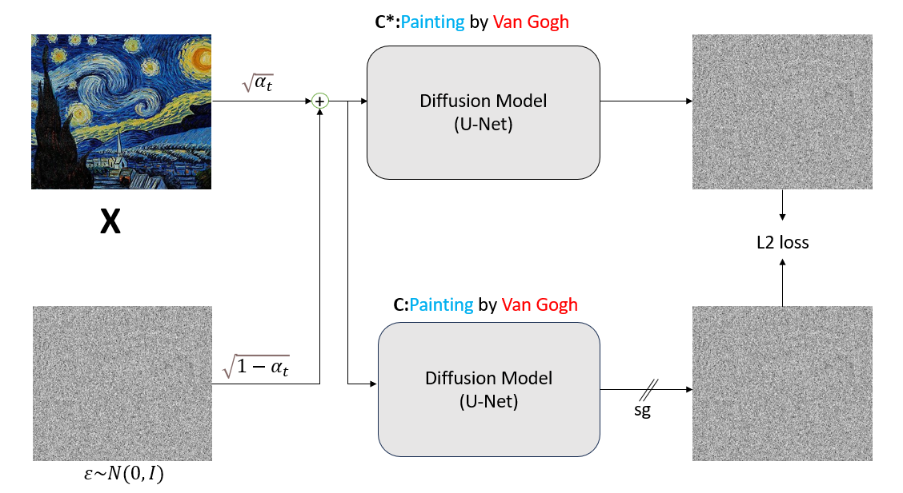

|
Shivank Garg I am Shivank Garg a final year Undergraduate at Indian Institute of Technology Roorkee. I am currently working with Adobe MDSR Labs on video generation models. Previously, I have also worked with Sony AI and have collaborated with multiple professors, phds and masters students from institutes including Stanford, CMU, Mila and Microsoft etc. I am currently interested and working in the field of LLM and VLM Alignment mainly exploring post-training RL Based techniques for generative models and also in the field of diffusion models and their applications. I am looking for fulltime research opportunities for Winter 2025. Email / CV / Github / Google Scholar |

|
ResearchI'm interested in LLM and VLM Alignment, post-training RL based techniques for generative models, and diffusion models and their applications . Some papers are highlighted. |
|
IPO: Your Language Model is Secretly a Preference Classifier
Shivank Garg, Ayush Singh, Shweta Singh, Paras Chopra ACL Main, 2025 bibtex / arXiv We introduce Implicit Preference Optimization (IPO), a novel framework that enhances Large Language Models (LLMs) through self-improvement. IPO leverages the model's intrinsic capability to generate continuous reward signals, which are then used to create preference pairs for fine-tuning with Direct Preference Optimization (DPO), eliminating the need for external preference models. |
|
|  |
Unmasking the Veil: An Investigation into Concept Ablation for Privacy and Copyright Protection in Images
Shivank Garg, Manyana Tiwari TMLR bibtex / OpenReview We introduce a technique for concept ablation, specifically targeting the removal of copyrighted logos and trademarks from images to protect intellectual property. We demonstrate the limitations of existing methods, particularly their vulnerability to jailbreaking via paraphrased prompts, and propose a more robust solution. |

|
Give me a hint: Can LLMs take a hint to solve math problems?
Vansh Agrawal, Pratham Singla, Amitoj Singh Miglani, Shivank Garg, Ayush Mangal NeurIPS MathAI Workshop, 2024 bibtex / arXiv We investigate the mathematical reasoning capabilities of LLMs. Systematically evaluating their performance on complex math problems when provided with hints, and further assessed their robustness under various adversarial conditions to probe the limits of their problem-solving abilities. |
|
Attention Shift: Steering AI Away from Unsafe Content
Shivank Garg, Manyana Tiwari NeurIPS RBFM Workshop 2024 bibtex / arXiv We introduced Attention Shift, an inference-time technique for content safety in text-to-image diffusion models utilising attention map manipulation of diffusion models to generate safe images from diffusion models while maintaining semantic consistency. |
|
|
Positional Embeddings in Transformer Models: Evolution from Text to Vision Domains
Abhinav Kumar, Adesh Gupta, Shivank Garg, Mansi Gupta ICLR BlogPost, 2025 bibtex / OpenReview A survey on different positional embeddings used in Vision Transformers and their generalisation to variable resolution images. |
|
|
LoRA-Mini: Adaptation Matrices Decomposition and Selective Training
Ayush Singh, Rajdeep Aher, Shivank Garg AAAI CoLORAI Workshop, 2025 bibtex / arXiv We introduce LoRA-Mini, an efficient parameter-efficient fine-tuning (PEFT) method. By decomposing the standard LoRA adaptation matrices and applying selective training of these matrices, LoRA-Mini significantly reduces the number of trainable parameters and lowers memory consumption during fine-tuning. |
|
|
Adaptive Urban Planning: A Hybrid Framework for Balanced City Development
Pratham Singla, Ayush Singh, Adesh Gupta, Shivank Garg AAAI Workshop on Urban Planning, 2025 bibtex / arXiv We introduce a novel hybrid framework for adaptive urban planning utilising LLMs and genetic algorithms. The agentic system is designed to generate sustainable and balanced city layouts by optimizing for multiple socio-economic and environmental factors. |
|
|
Snowy Scenes, Clear Detections: A Robust Model for Traffic Light Detection in Adverse Weather Conditions
Shivank Garg, Abhishek Baghel, Amit Agarwal, Durga Toshniwal KDD UG Consortium, 2024 bibtex / arXiv We present a data-centric approach to improve the robustness of traffic light detection models in adverse weather. We introduce a novel data curation and augmentation strategy that simulates challenging conditions like snow and fog, demonstrating a significant improvement in model generalization and performance on out-of-distribution data. |
|
|
Confidence is all you need for MI attacks (student abstract)
Abhishek Sinha, Himanshi Tibrewal, Mansi Gupta, Nikhar Waghela, Shivank Garg AAAI Student Abstract, 2024 bibtex / AAAI We introduce a novel confidence-based Membership Inference Attack (MIA). Our method, LIRA, utilizes a model's prediction confidence to infer whether a data point was included in its training set. |
|
The webpage is template is stolen from Jon Barron's website. |